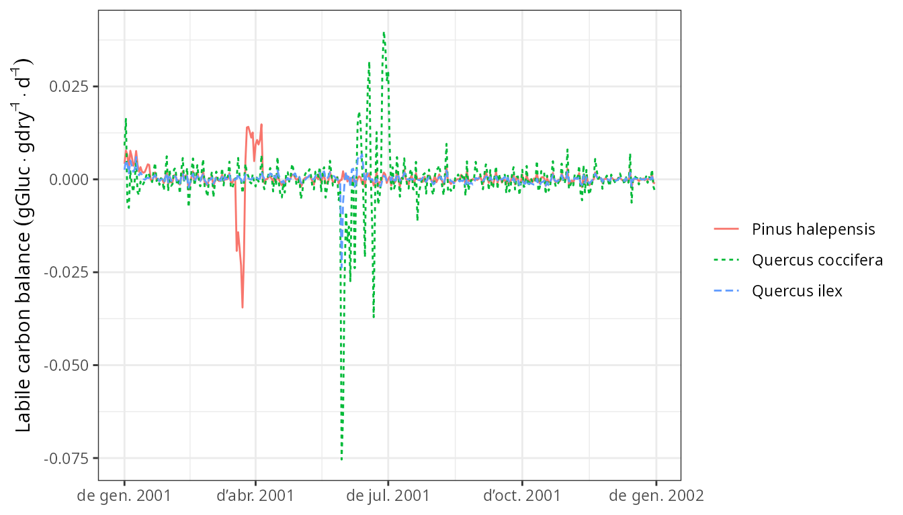
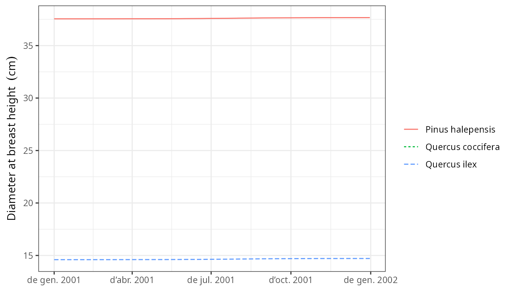
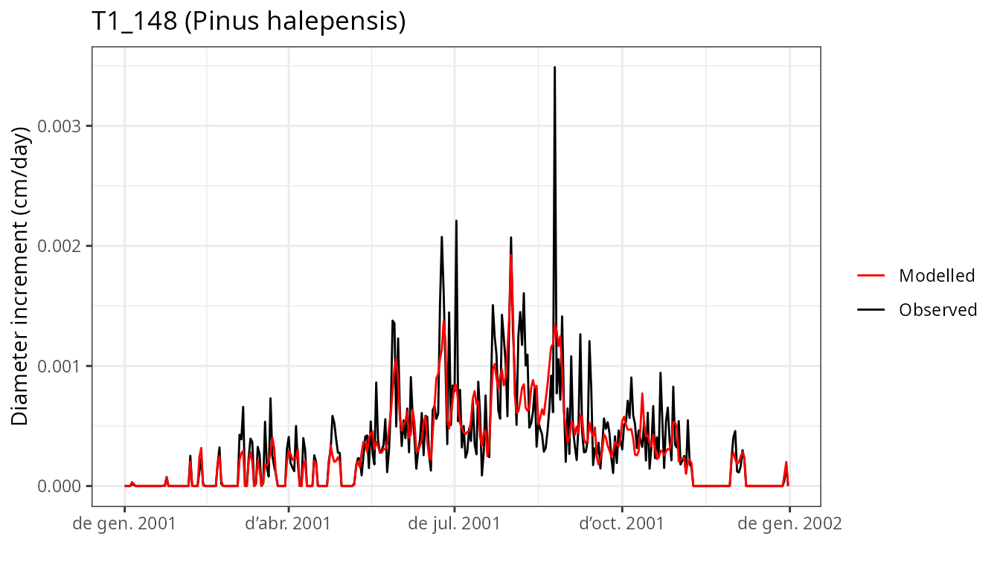

Forest growth
Miquel De Caceres
2022-05-18
Source:vignettes/runmodels/ForestGrowth.Rmd
ForestGrowth.RmdAbout this vignette
This document describes how to run the growth model of
medfate, implemented in function growth(). All
the details of the model design and formulation can be found at the
corresponding chapters of the medfate
book.
Because the forest growth model builds on the water balance model,
the reader is assumed here to be familiarized with spwb().
If not, we recommend reading vignette Basic
water balance before this one.
Preparing model inputs
Model inputs are explained in greater detail in vignettes Understanding
model inputs and Preparing
model inputs. Here we briefly review the different steps
required to run function growth().
Soil, vegetation, meteorology and species data
Soil physical characteristics needs to be specified using a
data frame with soil layers in rows and physical attributes
in columns. Soil physical attributes can be initialized to default
values, for a given number of layers, using function
defaultSoilParams():
spar = defaultSoilParams(4)The soil input for water balance simulation is actually a list of
class soil that is created using a function with the same
name:
examplesoil = soil(spar)As explained in the package overview, models included in
medfate were primarily designed to be ran on forest
inventory plots. Here we use the example forest object provided
with the package:
data(exampleforestMED)
exampleforestMED## $ID
## [1] "1"
##
## $patchsize
## [1] 10000
##
## $treeData
## Species N DBH Height Z50 Z95
## 1 148 168 37.55 800 100 600
## 2 168 384 14.60 660 300 1000
##
## $shrubData
## Species Cover Height Z50 Z95
## 1 165 3.75 80 200 1000
##
## $herbCover
## [1] 10
##
## $herbHeight
## [1] 20
##
## attr(,"class")
## [1] "forest" "list"Weather input needs to be in form of a data.frame with
days in rows and variables in columns. Here we will also use the default
data included in the package:
## MeanTemperature MinTemperature MaxTemperature Precipitation
## 2001-01-01 3.57668969 -0.5934215 6.287950 4.869109
## 2001-01-02 1.83695972 -2.3662458 4.569737 2.498292
## 2001-01-03 0.09462563 -3.8541036 2.661951 0.000000
## 2001-01-04 1.13866156 -1.8744860 3.097705 5.796973
## 2001-01-05 4.70578690 0.3288287 7.551532 1.884401
## 2001-01-06 4.57036721 0.5461322 7.186784 13.359801
## MeanRelativeHumidity MinRelativeHumidity MaxRelativeHumidity
## 2001-01-01 78.73709 65.15411 100.00000
## 2001-01-02 69.70800 57.43761 94.71780
## 2001-01-03 70.69610 58.77432 94.66823
## 2001-01-04 76.89156 66.84256 95.80950
## 2001-01-05 76.67424 62.97656 100.00000
## 2001-01-06 89.01940 74.25754 100.00000
## Radiation WindSpeed WindDirection PET
## 2001-01-01 12.89251 2.000000 172 1.3212770
## 2001-01-02 13.03079 7.662544 278 2.2185985
## 2001-01-03 16.90722 2.000000 141 1.8045176
## 2001-01-04 11.07275 2.000000 172 0.9200627
## 2001-01-05 13.45205 7.581347 321 2.2914449
## 2001-01-06 12.84841 6.570501 141 1.7255058The weather variables required by the growth() function
depend on the complexity of the water balance simulations underlying
growth (i.e. on the control parameter transpirationMode,
see below).
Finally, all simulations in medfate require a data frame
with species parameter values, for which we load using defaults for
Catalonia (NE Spain):
data("SpParamsMED")Simulation control
Apart from data inputs, the behaviour of simulation models can be
controlled using a set of global parameters. The default
parameterization is obtained using function
defaultControl():
control = defaultControl("Granier")Here we will run growth simulations using the basic water balance
model (i.e. transpirationMode = "Granier"). The complexity
of the soil water balance calculations can be changed by using
"Sperry" as input to defaultControl().
Growth input object
A last object, called growthInput, needs to be created
before calling the simulation function. This is analogous to
spwbInput and consists in the compilation of soil and
cohort-level parameters needed for simulations. The object can be
obtained by calling function growthInput(), but if one has
a forest object, it can be generated more directly using
function forest2growthInput():
x = forest2growthInput(exampleforestMED, examplesoil, SpParamsMED, control)All the input information for forest data and species parameter values can be inspected by printing different elements of the input object, whose names are:
names(x)## [1] "control" "soil" "canopy"
## [4] "cohorts" "above" "below"
## [7] "belowLayers" "paramsPhenology" "paramsAnatomy"
## [10] "paramsInterception" "paramsTranspiration" "paramsWaterStorage"
## [13] "paramsGrowth" "paramsAllometries" "internalPhenology"
## [16] "internalWater" "internalCarbon" "internalAllocation"
## [19] "internalMortality"As with spwbInput objects, information about the cohort
species is found in element cohorts (i.e. code, species and
name):
x$cohorts## SP Name
## T1_148 148 Pinus halepensis
## T2_168 168 Quercus ilex
## S1_165 165 Quercus cocciferaElement above contains the above-ground structure data
that we already know, but with an additional columns that describes the
estimated initial amount of sapwood area:
x$above## SP N DBH Cover H CR SA LAI_live
## T1_148 148 168.0000 37.55 NA 800 0.6605196 437.032040 0.96734365
## T2_168 168 384.0000 14.60 NA 660 0.6055642 57.407064 0.86167321
## S1_165 165 749.4923 NA 3.75 80 0.8032817 1.251072 0.03928201
## LAI_expanded LAI_dead
## T1_148 0.96734365 0
## T2_168 0.86167321 0
## S1_165 0.03928201 0Elements starting with params* contain cohort-specific
model parameters. Some of them were already presented in previous
vignettes (Basic
water balance and Advanced
water/energy balance). An important set of new cohort-specific
parameters for the forest growth model are
paramsGrowth:
x$paramsGrowth## RERleaf RERsapwood RERfineroot CCleaf CCsapwood CCfineroot
## T1_148 0.01210607 5.18e-05 0.0009610199 1.5905 1.47 1.3
## T2_168 0.01757808 5.18e-05 0.0072846640 1.4300 1.47 1.3
## S1_165 0.02647746 5.18e-05 0.0072846640 1.5320 1.47 1.3
## RGRleafmax RGRsapwoodmax RGRcambiummax RGRfinerootmax SRsapwood
## T1_148 0.03 NA 0.002475167 0.1 0.0001261398
## T2_168 0.03 NA 0.000650000 0.1 0.0001261398
## S1_165 0.03 0.002 NA 0.1 0.0001261398
## SRfineroot RSSG fHDmin fHDmax WoodC MortalityBaselineRate
## T1_148 0.001897231 0.3725000 80 160 0.4979943 0.0050
## T2_168 0.001897231 0.9500000 40 100 0.4740096 0.0000
## S1_165 0.001897231 0.7804035 NA NA 0.4749178 0.0015which includes maximum growth rates, senescence rates and maintenance
respiration rages. Another important set of parameters is given in
paramsAllometries:
x$paramsAllometries## Aash Bash Absh Bbsh Acr B1cr B2cr
## T1_148 5.8458000 1.494400 0.3596000 0.7138000 1.99500 -0.649 -0.02000
## T2_168 1.8574862 1.885548 0.5238830 0.7337293 1.98539 -0.552 -0.01386
## S1_165 0.1305509 2.408443 0.5147731 0.5311554 1.50600 -0.706 -0.07800
## B3cr C1cr C2cr Acw Bcw
## T1_148 -0.000120000 -0.00400 -0.15900 0.6415296 0.7310
## T2_168 -0.000110736 -0.00685 -0.20101 0.5681897 0.7974
## S1_165 0.000180000 -0.00700 0.00000 0.8390000 0.7350Note that in the previous models, allometries were already used to estimate above-ground structural parameters, but these were static during simulations.
Elements starting with internal* contain state variables
required to keep track of plant status. For example, the metabolic and
storage carbon levels can be seen in internalCarbon:
x$internalCarbon## sugarLeaf starchLeaf sugarSapwood starchSapwood
## T1_148 0.4029239 0.00925123 0.5738487 3.276375
## T2_168 0.3585751 0.00925123 1.0741383 3.280965
## S1_165 0.7223526 0.00925123 0.2857655 3.445161and internalAllocation stores the carbon allocation
targets:
x$internalAllocation## allocationTarget leafAreaTarget fineRootBiomassTarget
## T1_148 1317.523 57.579979 1574.98321
## T2_168 3908.823 22.439407 667.64217
## S1_165 4189.325 0.524115 13.57757Additional internal* elements are
internalMortality, used to keep track of dead individuals;
and internalRings, which stores state variables used to
model sink limitations on wood formation.
Executing the growth model
Having all the input information we are ready to call function
growth(), which has the same parameter names as
spwb():
G1<-growth(x, examplemeteo, latitude = 41.82592, elevation = 100)## Initial plant cohort biomass (g/m2): 7109.27
## Initial soil water content (mm): 291.257
## Initial snowpack content (mm): 0
## Performing daily simulations
##
## [Year 2001]: ....................................
##
## Final plant biomass (g/m2): 7347.27
## Change in plant biomass (g/m2): 238.004
## Plant biomass balance result (g/m2): 238.004
## Plant biomass balance components:
## Structural balance (g/m2) 147 Labile balance (g/m2) 117
## Plant individual balance (g/m2) 264 Mortality loss (g/m2) 26
## Final soil water content (mm): 268.687
## Final snowpack content (mm): 0
## Change in soil water content (mm): -22.57
## Soil water balance result (mm): -22.57
## Change in snowpack water content (mm): 0
## Snowpack water balance result (mm): 0
## Water balance components:
## Precipitation (mm) 513
## Rain (mm) 462 Snow (mm) 51
## Interception (mm) 95 Net rainfall (mm) 368
## Infiltration (mm) 409 Runoff (mm) 9 Deep drainage (mm) 75
## Soil evaporation (mm) 19 Transpiration (mm) 338
## Plant extraction from soil (mm) 338 Plant water balance (mm) -0At the end of daily simulations, the growth() function
displays information regarding the carbon and water balance, which is
mostly useful to check that balances are closed.
Function growth() returns an object of class with the
same name, actually a list:
class(G1)## [1] "growth" "list"If we inspect its elements, we realize that some of them are the same
as returned by spwb():
names(G1)## [1] "latitude" "topography" "weather"
## [4] "growthInput" "growthOutput" "WaterBalance"
## [7] "BiomassBalance" "Soil" "Stand"
## [10] "Plants" "LabileCarbonBalance" "PlantBiomassBalance"
## [13] "PlantStructure" "GrowthMortality" "subdaily"Some elements are common with the output of spwb(). In
particular, growthInput contains a copy of the input
object, whereas growthOutput contains the same object, but
with values of state variables at the end of simulation. The new list
elements, with respect to the output of function spwb(),
are LabileCarbonBalance (components of the labile carbon
balance), PlantBiomassBalance (plant- and cohort-level
biomass balance), PlantStructure (daily series of
structural variables) and GrowthMortality (daily growth and
mortality rates).
Plots and summaries
Users can inspect the output of growth() simulations
using functions summary() and plot() on the
simulation output. Several plots are available, in addition to all the
plots that were available to display the results of spwb()
simulations. Some of them are illustrated in the following
subsections:
Carbon balance
To inspect components of the plant carbon balance we can first display daily gross photosynthesis expressed as the carbon fixation relative to dry biomass:
plot(G1, "GrossPhotosynthesis", bySpecies = T) Then we can draw the maintenance respiration costs (which include the
sum of leaf, sapwood and fine root respiration) in the same units:
Then we can draw the maintenance respiration costs (which include the
sum of leaf, sapwood and fine root respiration) in the same units:
plot(G1, "MaintenanceRespiration", bySpecies = T) Finally we can display the daily negative or positive balance of the
plant storage, which determines changes in plant carbon pools:
Finally we can display the daily negative or positive balance of the
plant storage, which determines changes in plant carbon pools:
plot(G1, "LabileCarbonBalance", bySpecies = T)
Carbon assimilation and respiration rates define the dynamics of stored carbon. The most important storage compartment is sapwood starch, whose dynamics can be shown using:
plot(G1, "StarchSapwood", bySpecies = T)
Structural changes
Leaf and sapwood area dynamics arising from the interplay between growth and senescence of tissues can be inspected using:
plot(G1, "LeafArea", bySpecies = T)
plot(G1, "SapwoodArea", bySpecies = T)Even if one year is a short period for tree growth, we can display the resulting dynamics in diameter at breast height (DBH) or plant height:
plot(G1, "DBH", bySpecies = T)## Warning: Removed 365 row(s) containing missing values (geom_path).
plot(G1, "Height", bySpecies = T)
Interactive plots
Finally, recall that one can interactively create plots using
function shinyplot, e.g.:
shinyplot(G1)Growth evaluation
Evaluation of growth simulations will normally imply the comparison of predicted vs observed basal area increment (BAI) or diameter increment at a given temporal resolution.
Here, we illustrate the evaluation functions included in the package using a fake data set, consisting on the predicted values and some added error.
data(exampleobs)Normally growth evaluations will be at annual scale, but here we only
have one year of simulated growth. Assuming we want to evaluate the
predictive capacity of the model in terms of monthly basal area
increment for the pine cohort, we can plot the relationship between
observed and predicted values using function
evaluation_plot():
evaluation_plot(G1, exampleobs, "BAI", cohort = "T1_148",
temporalResolution = "month", plotType = "scatter")## `geom_smooth()` using formula 'y ~ x'
And the following would help us quantifying the strength of the relationship:
evaluation_stats(G1, exampleobs, "BAI", cohort = "T1_148",
temporalResolution = "month")## n Bias Bias.rel MAE MAE.rel r
## 12.00000000 -0.06622203 -7.35231796 0.10432221 11.58240068 0.98533974
## NSE NSE.abs
## 0.96085838 0.84864074The observed data set is fake and the evaluation is unrealistically good. For illustrative purposes, we also compare diameter increment values, here drawing the observed and predicted time series together:
evaluation_plot(G1, exampleobs, "DI", cohort = "T1_148",
temporalResolution = "day")
Again, actual comparisons will be done at coarser temporal
resolution. For convenience, function shinyplot() also
accepts an observed data frame as second argument, which allows
performing model evaluation interactively:
shinyplot(G1, exampleobs)